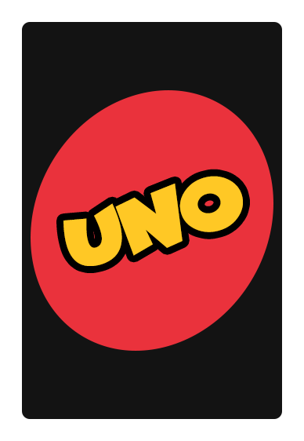
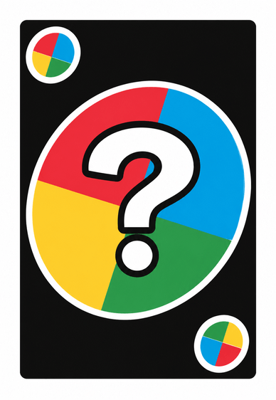

Tahap pilot · belum tersedia di Play Store
GATRA — game kartu UNO modifikasi untuk intervensi psikofinansial remaja
Dalam satu Sesi, Saldo ada di tanganmu: setiap Kartu Misteri membuka pilihan Gacha, dan setiap pilihan langsung terasa di Saldo sampai layar Evaluasi.
- 100 koin Saldo awal
- 118 kartu dalam deck
- 10 Kartu Misteri
- 7 kartu di tangan
Cara kerja
Satu Sesi, empat langkah yang berurutan
GATRA memakai aturan UNO yang sudah dikenal, lalu menambahkan satu lapisan: keputusan yang punya harga. Urutannya selalu Kartu Misteri, Gacha, Saldo, lalu Evaluasi.


-
Kartu Misteri
Deck berisi 118 kartu, termasuk 10 Kartu Misteri. Kartu ini bisa dimainkan kapan saja tanpa syarat warna: pilih warna, lalu Gacha terbuka.
10 Kartu Misteri -
Gacha
Roll gratis memberi satu dari 10 efek dengan peluang sama. Roll berbayar memakai 10 efek yang semuanya menguntungkan pemilik kartu, dengan bobot berbeda.
Harga 10–40% Saldo -
Saldo
Pemain dan Bot masing-masing mulai dengan 100 koin. Roll berbayar memotong Saldo saat itu: dibulatkan ke bawah, minimal 1 koin, tidak pernah melebihi Saldo.
Saldo pemain habis = Sesi berakhir -
Evaluasi
Sesi ditutup dengan grafik Saldo, statistik, distribusi pool, dan tiga paragraf catatan dari AI Coach. Tanpa jaringan, catatan memakai template.
Tetap jalan offline
Konteks penelitian
Dibuat sebagai instrumen penelitian, bukan peluncuran produk
GATRA dikembangkan oleh Tim Peneliti GATRA di Lab Media Game dan Mobile, Fakultas Ilmu Komputer, Universitas Brawijaya. Penelitiannya berfokus pada intervensi psikofinansial remaja, dan GATRA adalah media interaksi yang dipakai di dalamnya.
Karena itu GATRA belum dirilis sebagai produk umum: belum ada di Play Store, belum ada pembelian, dan belum ada iklan. Build pilot dipasang langsung ke perangkat peserta oleh tim, bukan lewat toko aplikasi.
- Peserta. Pilot melibatkan siswa SMP dengan izin sekolah dan persetujuan orang tua atau wali.
- Data. Tanpa nama, email, lokasi, kontak, atau ID perangkat. Rincian payload dan retensinya ada di kebijakan privasi.
- Hasil. Situs ini menjelaskan produk dan praktik data; situs ini tidak memuat klaim hasil penelitian.
Identitas operator
Tim Peneliti GATRA
Lab Media Game dan Mobile
Fakultas Ilmu Komputer
Universitas Brawijaya
Ikut pilot
Bawa GATRA ke kelas atau komunitasmu
Pilot berjalan terbatas dan didampingi tim. Kami mencari sekolah, guru, dan komunitas yang ingin mencoba GATRA bersama siswa SMP, serta pihak yang ingin menilai kesiapan instrumen sebelum rilis.
Yang perlu disiapkan
Satu perangkat Android per peserta, ruang kelas atau pendampingan guru, dan izin sekolah beserta persetujuan orang tua atau wali. Tim menyediakan build pilot dan lembar izin.
Saat mengirim email, sertakan nama sekolah atau komunitas dan perkiraan jumlah peserta agar tim bisa menyiapkan kebutuhan pilot.
kontak@example.ac.id masih
PLACEHOLDER
— bukan alamat aktif. Alamat nyata dipasang sebelum rilis pilot (lihat tiket 12).